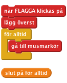
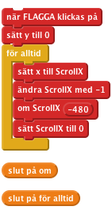
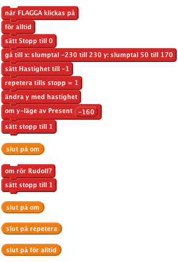
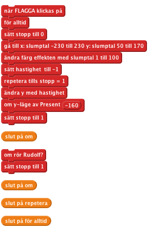
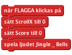
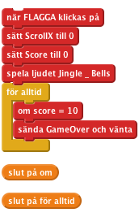

These projects are for use inside the UK only. All Code Clubs
must be registered. You can check registered clubs on the map at
www.codeclub.org.uk. This coursework is developed in the open on GitHub,
github.com/CodeClub/ come and join us!
Introduktion
I det här projektet kommer vi att skapa ett spel med rullande bakgrunder, poängsättning och en festlig Game Over-skärm.
En olycka i en leksaksfabrik har gjort att julklappar faller ner från himlen. Hjälp Rudolf att rädda Julen genom att fånga julklapparna!
STEG 1: Gör så att Rudolf flyger
Checklista
- Starta ett nytt Scratchprojekt. Ta bort katten genom att högerklicka på den och välja Radera.
- Byt bakgrunden till SkyBackground.png.
- Använd Välj ny sprite från fil knappen för att lägga till Rudolf-spriten till projektet (använd Rudolph.png filen)
- Byt namn på spriten till Rudolf.
- Gör så att Rudolf följer musen genom att använda följande script:

Testa ditt projekt
Klicka på den gröna flaggan och flytta på muspekaren, följer Rudolf efter muspekaren?
Checklista
- För att göra spelet mer intressant ska vi lägga till några rörliga snöiga backar så att det ser ut som att Rudolf flyger. Använd knappen Välj ny sprite från fil för att lägga till Snöspriten till projektet ( använd filen __SnowHills.png)
- Byt namn på spriten till Snow1.
- Skapa en ny variabel genom att klicka på Variabler och Ny variabel. Kalla den ScrollX och skapa den för alla sprites, bocka sedan av rutan bredvid för att
ta bort variabeln från scenen. Den här variabeln kommer att användas för att kontrollera hur backarna rör sig.
- Lägg till följande script för att göra så att backarna rör sig:

Testa ditt projekt
Klicka på den gröna flaggan, rör sig backarna? Vad händer då backarna rör sig mot sidan av scenen?
Checklista
- Låt oss fixa problemet med att de snöiga backarna flimrar då de når den högra sidan av skärmen. Lägg till mer backar till scenen genom att använda Välj ny sprite från fil knappen för att lägga till Snö-spriten till projektet igen (använd SnowHills.png-filen).
- Byt namn på spriten till Snow2.
- Lägg till följande script till Snow2-spriten för att tillåta en ytterligare uppsättning av backar som följer tätt efter det första:

Testa ditt projekt
Klicka på den gröna flaggan, rör sig backarna? Har problemet med de flimrande träden försvunnit?
STEG 2: Fallande julklappar
Checklista
- Vi måste nu lägga till julklappar som Rudolf ska samla in. Använd knappen Välj ny sprite från fil för att lägga till Julklapp-spriten till projektet (använd Present.png filen).
- Byt namn på spriten Julklapp.
- Skapa en ny variabel genom att klicka på variabler. Kalla den för
Stopp och gör den för enbart för denna sprite, bocka sedan av rutan bredvid för att ta bort den från scenen. Denna kommer att användas för att kontrollera när julklappen ska tas bort från spelet.
- Skapa en annan variabel och kalla den för "hastighet" - gör så att den finns för enbart denna sprite. Bocka sedan av rutan bredvid för att ta bort variabeln från scenen. Den här variabeln kommer att användas för att kontrollera julklapparnas hastighet då de faller nerför skärmen.
- Lägg till följande script till Julklapp -spriten för att låta den falla ned från himlen. Notera att vi kommer att använda "slumptal" för att göra så att julklapparna framträder på olika ställen varje gång.
- Genom att använda kommandot "rör [ Rudolf ]" kan vi göra så att julklappen försvinner när den vidrörs. Detta kan vi använda senare för att sätta poäng.

Testa ditt projekt
Klicka på den gröna flaggan, faller julklapparna från himlen? Försvinner de när Rudolf rör dem eller då de slår i marken?
Checklista
- Låt oss göra spelet mer intressant genom att byta färg på julklapparna varje gång de faller ner. Gör detta genom att använda ändra färg-kommandot.
- Ändra hastigheten på varje julklapp genom att byta ut sätt hastighet med slumptal-kommandot, prova olika värden som -10 till -1. Ditt script ska nu se ut så här.

Testa ditt projekt
Klicka på den gröna flaggan, faller julklapparna med olika hastighet och har de olika färg?
STEG 3: Poängsättning och ljudeffekter
Checklista
- Låt oss ändra vårt script för att hålla koll på poängsättningen i spelet. Vi kan sedan använda detta för att bestämma när game over-meddelandet ska visas.
- Skapa en ny variabel genom att klicka på variabler. Kalla den "Poäng" och gör den för alla sprites. Låt denna variabel vara ibockad så att den syns på skärmen.
- Ändra scriptet bakom Present spriten så att det ser ut så här. Notera att vi har lagt till både ljudeffekter med
spela trumman kommandot och även ändra [ score ] med 1 när Rudolf rör julklappen.

- Låt oss lägga till lite musik till spelet, importera ljudfilen Jingle_Bells.mp3 till Scenen.

- Lägg till följande script till Scenen, detta kommer att sätta poängen till 0 när spelet startas. Det kommer också att spela Jingle Bells när spelet spelas.
Notera, om musiken till en början låter "hackig" ska du spara projektet, stänga ner Scratch och öppna projektet igen.
Testa ditt projekt
Klicka på den gröna flaggan, ändras poängen när Rudolf rör vid en julklapp?
Checklista
- Låt oss ändra vårt script för att hålla koll på poängen i spelet. Vi kan använda detta senare för att bestämma när game over-meddelandet ska visas.
- Ändra scriptet på Scenen så att när poäng når 10 ska vi "sända" ett GameOver -meddelande.

- Vi måste nu lägga in vårt GameOver-meddelande. Använd knappen Välj ny sprite från fil för att lägga till GameOver -spriten till projektet (använd filen GameOver.png).
- Byt namn på spriten till GameOver.
- Lägg till följande script till GameOver-spriten. Detta kommer att gömma bilden när spelet startar och visa den när GameOver-meddelandet har tagits emot.

Testa ditt projekt
Klicka på den gröna flaggan, ändras poängen när Rudolf rör vid julklappen?
Utmaning: Gör spelet svårare
- Kan du få julklapparna att vingla på deras väg nerför skärmen?
- Kan du lägga till mer än en julklapp till spelet på samma gång?
- Ändra GameOver-meddelandet så att det visas efter att 20 julklappar har samlats in.
- Kan du minska poängen med 1 när en julklapp slår i marken?
Bra gjort du är klar, nu kan du njuta av spelet.
Ha en riktigt God Jul!